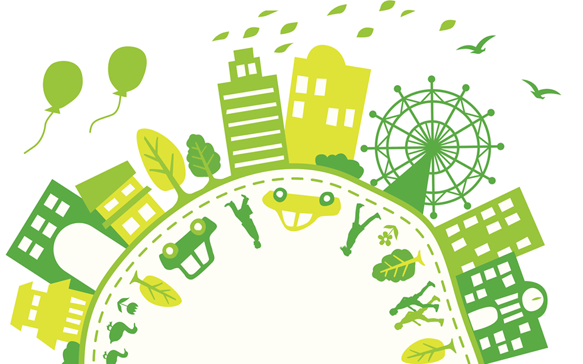

Soyeco.co

¿Porqué?
El mundo moderno esta lleno de materiales que pocos saben que se pueden reutilizar,
convertir en nuevos elementos, transformarlos en materias primas, en otras palabras
reciclar. La conciencia del reciclaje debe crearse, nacer en nosotros para vivir en un mundo
con menos basura.
Tres R (Reducir, reutilizar, reciclar) es el gran objetivo a alcanzar por la nueva sociedad
consiente, reducir consumo de bienes o energía, reutilizar para dar una segunda vida a
diferentes materiales, reciclar para separa y optimizar tiempos de calificación.
¿Cómo?
El acercamiento de la tecnología en nuestra sociedad, crea una gran autopista para el
conocimiento; camino que debemos aprovechar para informar y dar a conocer a nuestra
sociedad sobre las ventajas y beneficios que brinda la cultura del reciclaje.
Componentes tecnológicos que eduquen, incentiven y creen conciencia es el objetivo de
nuestro grupo. Buscamos crear un App que genere pequeños cambios en la conciencia de los
ciudadanos, informando de forma práctica, asertiva y divertida sobre las grandes ventajas
del reciclar.
Se buscará crear alianzas con empresas aliadas y comerciantes de los sectores donde se
lance la App, creando pequeños incentivos económicos.
Cada reto personal acerca a nuestros usuarios al ranking de las personas con mayor
conciencia de reciclaje.
¿Para qué?
- Reducir o eliminar la cantidad de materiales destinados a un uso único (por ejemplo, los embalajes).
- Adaptar los aparatos en función de sus necesidades (por ejemplo, poner lavadoras y lavavajillas llenos y no a media carga).
- Reducir pérdidas energéticas o de recursos: de agua, desconexión de aparatos eléctricos en modo de espera, conducción eficiente, desconectar transformadores, etc. Ejemplo: reducir la emisión de gases contaminantes, nocivos o tóxicos evitará la intoxicación animal o vegetal del entorno si llega a cotas no nocivas. Países europeos trabajan con una importante política de la reducción y con el lema: La basura es alimento (para la tierra) producen productos sin contaminantes (100% biodegradables), para que cuando acabe su vida útil no tenga impacto en el medio o este sea lo más reducido posible.
¿Dónde?
La campaña de lanzamiento de la App se realizará inicialmente para la zona de Engativá
¿Cuándo?
Septiembre 2018
¿Quiénes?
FocusDream